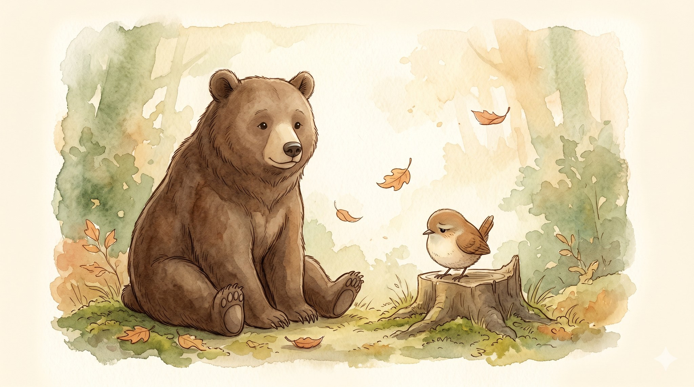
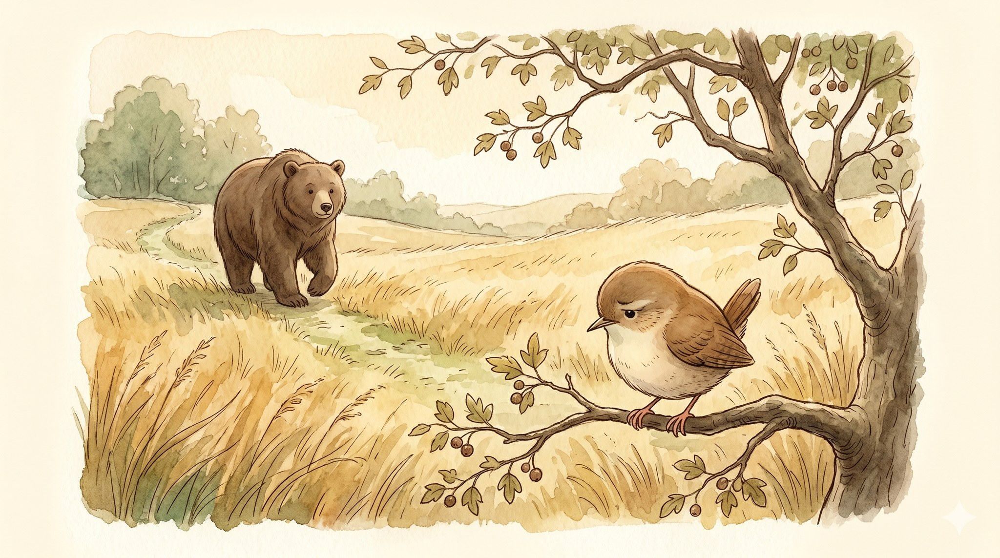
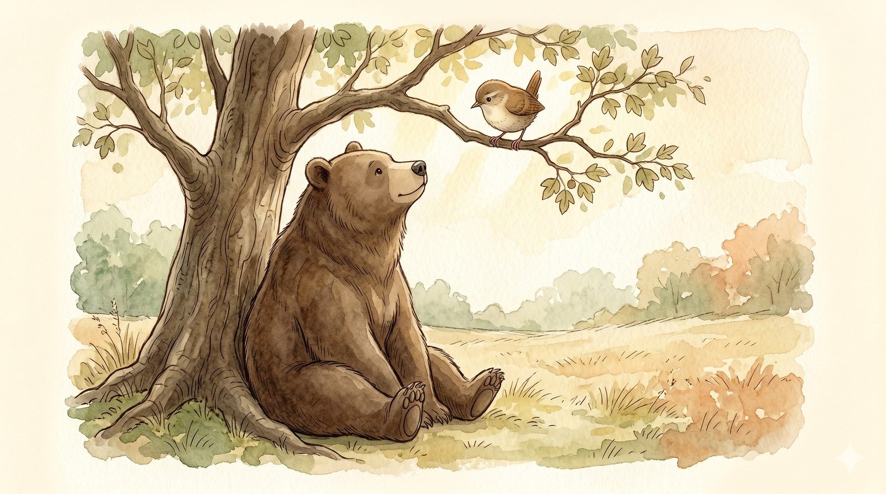
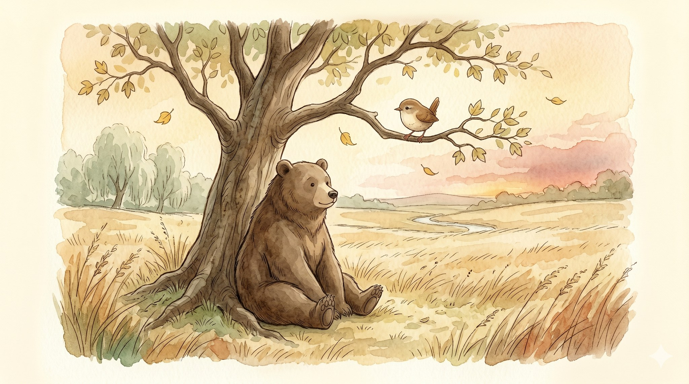
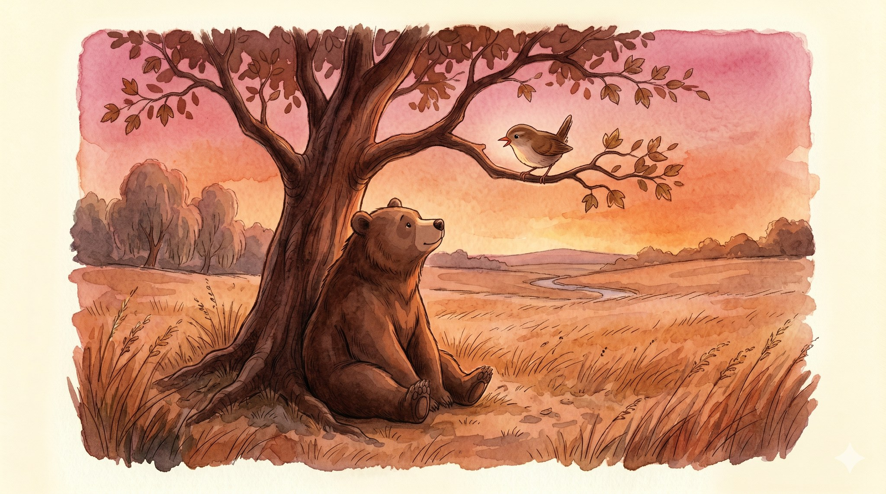
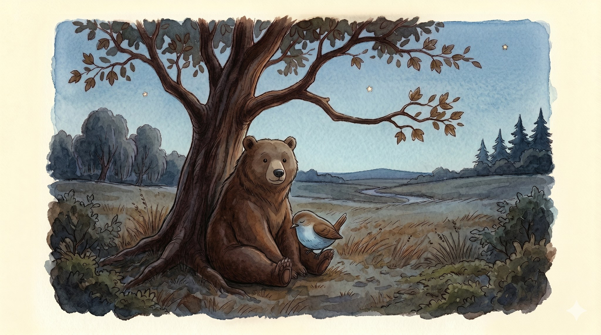

The Quiet Bear

A story for ages 4–8 about how sitting with someone can matter more than fixing them.

Wren the small brown bird sat on the low branch of the hawthorn tree, and Wren was sad.
Wren did not want to talk about it. Wren did not even know how. Some sadness is like that. It arrives without a reason, and it does not want to explain.
Up the path came Bear. A big bear. A slow bear. A very quiet bear. Bear had known Wren a long, long time.

Bear stopped under the hawthorn tree.
Bear did not ask, "What's wrong?" Bear did not ask, "Why are you sad?" Bear did not say, "Cheer up!"
Bear just sat down at the foot of the tree — thump — and looked up at the sky.
Wren said nothing.
Bear said nothing.

The wind combed the long grass, this way, then that. A yellow leaf let go and drifted down. Then another. Far away, past the willows, a creek kept up its small water-song.
Bear stayed.
The sky began to change at one edge, the way evening sneaks in.
Bear stayed.

After a long, long while, Wren spoke. Wren's voice was very small.
"I am sad today," said Wren. "I do not know why. I just am."
"I know," said Bear.
The sky turned pink above the trees.
"I do not want to be all by myself," said Wren.
"I know," said Bear. "That is why I came. I am not going anywhere."

The sky turned orange, then the soft sleepy blue that comes before night.
Wren hopped down onto the cool grass and leaned, just a little, against Bear's warm dark fur.
Bear did not move at all.
"Thank you, Bear," said Wren.
"You're welcome, Wren," said Bear.
The first star came out. Then another.
It was a good night for not talking. Later, it would be a good night for talking too.
But first, they just sat.
Sitting with someone is sometimes more important than fixing them.
← Back to the library